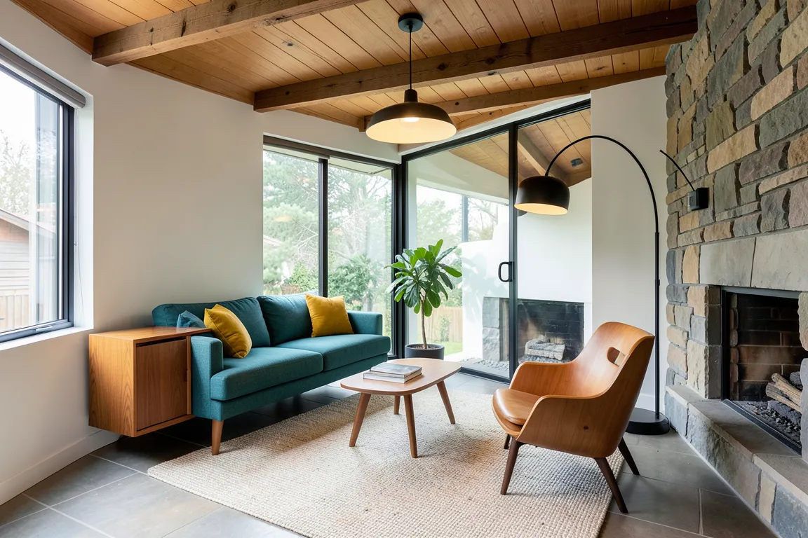

Послевоенный дом открытой планировки США и Европы. Низкая мебель из тика и гнутой фанеры на сужающихся ножках стоит перед стеклянной стеной в сад; каменный камин или вид — фокус, а несколько насыщенных акцентов согревают нейтральную комнату.

Главная идея
Современный дом соединяет комнату с пейзажем, а хороший серийный дизайн может быть тёплым, а не только рациональным.
Принципы дизайна
Держите мебель низкой: спинки диванов 70–75 см и буфеты 75 см, чтобы одна линия горизонта шла под подоконником.
Поднимайте каждую вещь на сужающихся расставленных ножках 15–25 см, чтобы под ней виден был пол.
Сделайте стеклянную стену в сад или каменный камин фокусом и обратите главный диван к нему.
Группируйте сиденья на одном ковре вокруг низкого стола; ковёр держит как минимум передние ножки каждого сиденья.
Повторяйте конструктивный модуль дома, около 240 см, в импостах окон, потолочных балках и длине буфета.
Берите тёплое дерево на 25–35% видимой поверхности и ставьте против него одну грубую плоскость камня или кирпича.
Ограничьте насыщенный цвет 10%: подушки, одно кресло, лампа или принт в горчичном, оранжевом или сине-зелёном.
Антипаттерны
Тяжёлая мебель, стоящая на полу без видимых ножек
Высокие шкафы или диваны с высокой спинкой перед окнами
Исторические профили, панели или резной орнамент
Формальная зеркальная планировка относительно центральной линии